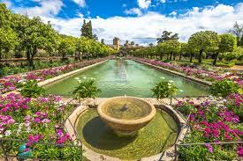

El Alcázar de los Reyes Cristianos, fortaleza y palacio de sólidos muros, encierra en su interior gran parte de la evolución arquitectónica de Córdoba. Restos romanos y visigodos conviven con los de origen árabe en este majestuoso solar, ya que fue lugar predilecto de los distintos gobernantes de la ciudad. Cuando en 1236 Córdoba es conquistada por Fernando III el Santo, el edificio, que formaba parte del antiguo Palacio Califal, estaba totalmente asolado. Alfonso X el Sabio comienza su restauración, completada durante el reinado de Alfonso XI. A lo largo de la Historia se le ha dado múltiples usos, como Sede del Santo Oficio (Inquisición), o cárcel (en la primera mitad del siglo XIX).
Noticia 2
Tras la conquista castellana de la ciudad, el solar ocupado por el antiguo alcázar andalusí fue repartido entre el rey Fernando III, el obispo Lope de Fitero, algunos nobles y la Orden de Calatrava. El soberano Alfonso X el Sabio comenzó las primeras construcciones cristianas sobre las musulmanas como la torre de los Leones y un lienzo de muralla,nota 1 aunque la mayor parte de su edificación ocurrió a partir de 1328 a manos de Alfonso XI de Castilla, que proyecta un espacio cuadrangular de 4.000 metros cuadrados y construye los baños mudéjares para su amante sevillana Leonor de Guzmán.9 De hecho, el monarca compra a unos monjes parte del terreno para que abandonen el Alcázar y les cede un nuevo espacio donde construyen la iglesia de san Agustín..
Noticia 3

Sede de la Santa Inquisición (1492-1812) Vista desde el Jardín bajo. Tras la campaña de Granada y la finalización de las campañas contra los musulmanes en España, los Reyes Católicos cedieron el inmueble a las autoridades eclesiásticas, las cuales lo convirtieron en Tribunal del Santo Oficio, perdiendo entonces su carácter palaciego. Dicha institución realizó diversas obras para adaptar el edificio al nuevo uso, especialmente la creación de celdas para los prisioneros, en la que fueron transformados por ejemplo los baños mudéjares, o la construcción de la capilla de la Inquisición durante el siglo XVIII. Uno de los inquisidores más crueles que habitaron el Alcázar fue Diego Rodríguez de Lucero, que mandó quemar en la hoguera a 107 personas en un auto de fe en 1504; esta situación continuó y la ciudadanía, hastiada, invadió el Alcázar y liberó a más de 400 prisioneros. Lucero tuvo que huir dirección a Sevilla en lo que hubiera sido su muerte a manos del pueblo.15 Cárcel municipal (1812-1941) En 1812, y tras la abolición por parte de las Cortes Constituyentes de Cádiz del Tribunal de la Inquisición, se convirtió en la cárcel municipal, antes ubicada en el actual Mercado de Sánchez Peña de la plaza de la Corredera. Este nuevo uso trajo consigo una remodelación en 1820 llevada a cabo por el arquitecto municipal Pedro de Lara con un presupuesto de 35.000 reales, en la que se cegaron los arcos del patio Mudéjar para la habilitación de nuevos calabozos.8 En 1931, durante la Segunda República Española, fue declarado Monumento Histórico y pasó a destinarse como cuartel militar.16 No obstante, tras la Guerra civil española, se concentraron aquí numerosos presos del bando republicano, que obligaron al Régimen franquista a construir la cárcel de Fátima en 1941 y dejar el Alcázar como administración militar